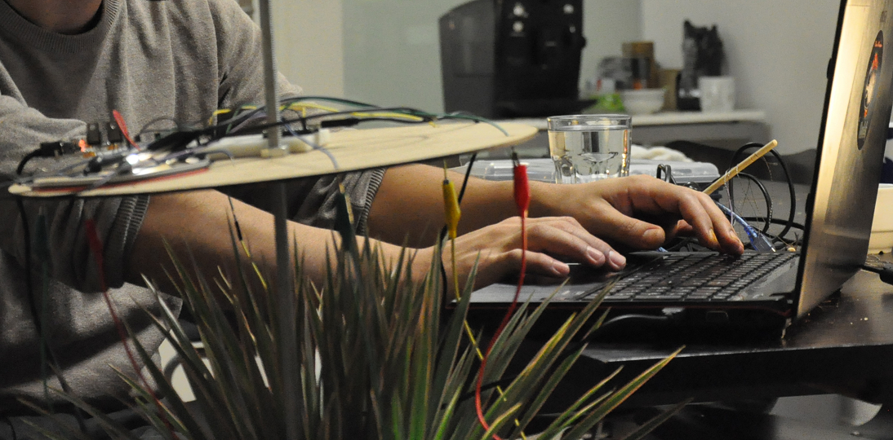
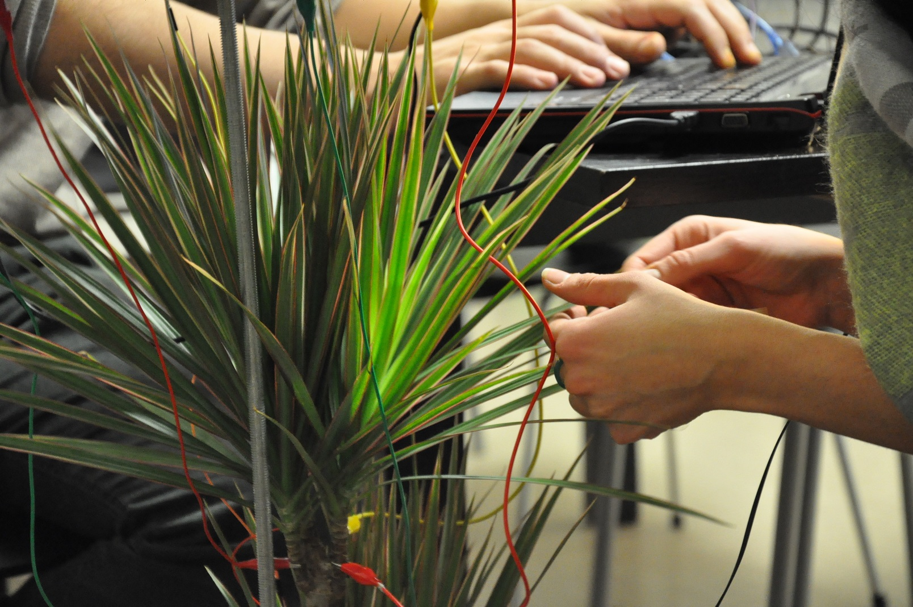
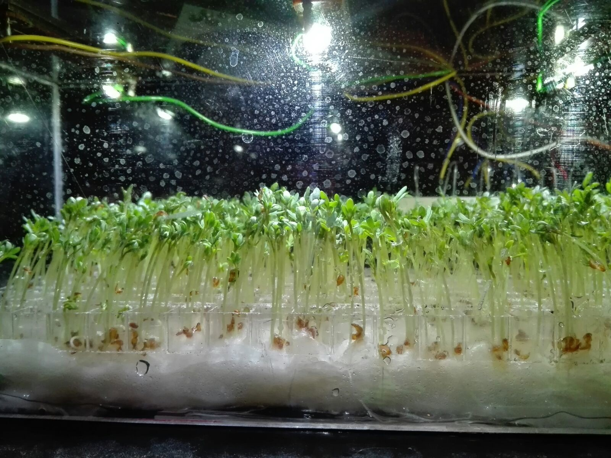

PowerPlant is a series of experimentation with some already done concepts, reviewing new complementary solutions of sonification, sustainability, and interactivity. Not finished works but operative prototypes!


Dradoc is the result of a collaboration with Klimentina Milenova, in which we aim to explore new ways to create plant interfaces. In this artistic approach the results shown how plants could be feeling when touch by the human hand.
Normally the human intervention in natural enviroments occur to be destructive and when not at least occurs to be protective in a very unnatural ways, for example keeping plants alive thanks to the conditioned enviroment of our artificial habitats, we have to water the plants and cover their light necesities by exposing them in our light places or even creating artificial lights when is needed to fulfill its basic photosintesis process. This artwork reflects about the crossroads between systems and its boundaries to get a good feedback and understanding.
The electrical capacity of our body and the plant makes the conductive difference which would trigger the relations between the human, plant, and technology systems which make us able to enable the necesary care for the plant to get a feedback from the result to satisfy it.
The plant response is appart from the image that make us see how are the condition by the color of the leaves and its shape and firmness, the sound would be the quality which would trigger another unexpected feeling.
Moreover Dradoc is another approach to make more natural controllers in which the feeling of technology doesn't have to be entirely artificial.
Mapping Data on Plants
This research project shows an untypical approach towards real time data visualisation: Mapping the data on living organisms.
Already nature is a context visualization of many values and variables, the differences between climate and the different locaitons, human or animal interaction, natural disasters or extraordinary cases are the major influences. This project is a reflection of how information can be back to reality in a material generative way, controlled by different information values the results are a natural impact abstraction of new ways to visualise living interactivity, interfaces no longer human-machine but to be understood by this two, what can be information-nature Data representation.
The time period of this mapping can reach up to the life span of a tree. The light sources can be calculated and the organism is thereby modelled over many years.
At this stage the research focuses on short term projects: a printer that grows grass by different amounts of light, patterns that are formed by phototropism - plants growing into the direction of a light source - or seeding plants of the same type and influence their growing pattern in different ways.
The current research also aims to find suitable visualisation methods and so far it is possible to visualise a 8 dimensional data array, if not more, onto a plant by altering these factors according to the data set: amount of light, amount of water, amount of oxygen, type of soil, nutrients, humidity, oxygen and gravity.
Mapping Data on Plants
This research project shows an untypical approach towards real time data visualisation: Mapping the data on living organisms.
Already nature is a context visualization of many values and variables, the differences between climate and the different locaitons, human or animal interaction, natural disasters or extraordinary cases are the major influences. This project is a reflection of how information can be back to reality in a material generative way, controlled by different information values the results are a natural impact abstraction of new ways to visualise living interactivity, interfaces no longer human-machine but to be understood by this two, what can be information-nature Data representation.

The time period of this mapping can reach up to the life span of a tree. The light sources can be calculated and the organism is thereby modelled over many years.
At this stage the research focuses on short term projects: a printer that grows grass by different amounts of light, patterns that are formed by phototropism - plants growing into the direction of a light source - or seeding plants of the same type and influence their growing pattern in different ways.
The current research also aims to find suitable visualisation methods and so far it is possible to visualise a 8 dimensional data array, if not more, onto a plant by altering these factors according to the data set: amount of light, amount of water, amount of oxygen, type of soil, nutrients, humidity, oxygen and gravity.
Way back